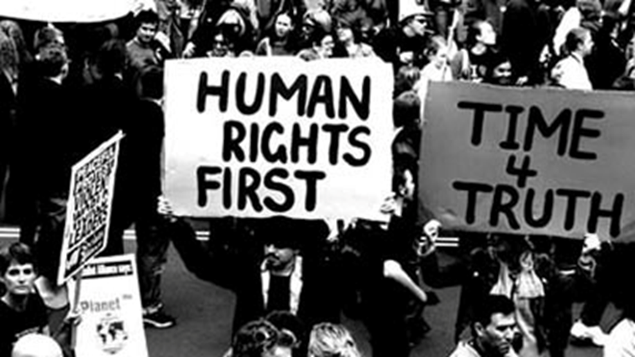

About us
HURISA is a Non-Governmental Organisation that was founded by retired judge Richard Goldstone in June 1993 as the Institute for the Study of Public Violence. The Institute functioned as the Goldstone Commission of Inquiry's research and documentation branch with regard to the prevention of intimidation and public violence.
The Rural Women Movement and the Human Rights Institute of South Africa worked together during the pandemic's peak in 2020. This was done in an effort to influence the human rights initiatives for women and children who reside in marginalised areas. Voices of Women Fighting the COVID-19 Epidemic and Supporting Communities adhere
to procedures were brought up in order to be acknowledged as crucial service suppliers.Female business owners and Financial assistance was given to informal traders so they may create face marks to give to volunteers and health facilities.
and community GBV shelters.

The organisation envisions a world in which everyone is aware of their rights as human beings, how to have those rights realised, and how to access channels for redress. In order to do this, the organisation aims to educate people about human rights as much as possible in South Africa and abroad, particularly with regard to
socioeconomic rights, human rights systems, and human rights philosophy.